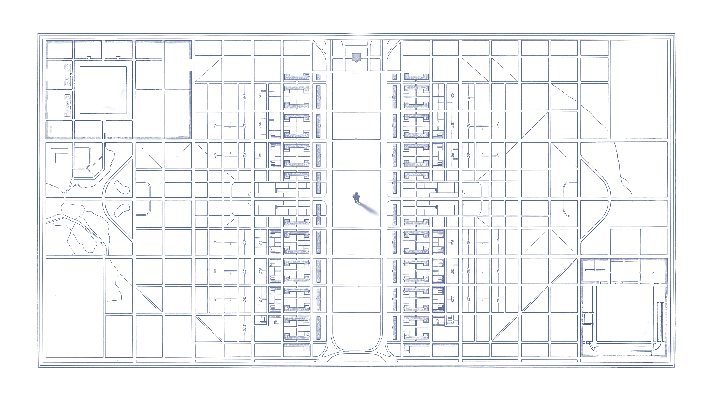

<!doctype html>
<html lang="en">
<head>
<meta charset="utf-8">
<title>Act 1 stills</title>
<!-- Stills for Edu's approval. Nothing here animates. ?s=A to E picks a still. -->
<style>
  @font-face{font-family:"Source Serif 4";src:url("../fonts/SourceSerif4.ttf") format("truetype");font-weight:200 900}
  @font-face{font-family:"Source Serif 4";src:url("../fonts/source-serif-4-latin-800-italic.woff2") format("woff2");font-weight:800;font-style:italic}
  @font-face{font-family:"Source Serif 4";src:url("../fonts/source-serif-4-latin-400-italic.woff2") format("woff2");font-weight:400;font-style:italic}
  @font-face{font-family:"Pinyon Script";src:url("../fonts/pinyon-script-latin-400-normal.woff2") format("woff2")}
  html,body{margin:0;background:#e9d4ba;overflow:hidden}
  .stage{position:absolute;left:0;top:0;width:1920px;height:1080px;overflow:hidden;background:#e9d4ba}
  .abs{position:absolute}
  .age{inset:0;width:1920px;height:1080px;mix-blend-mode:multiply;pointer-events:none}
  .lit{inset:0;width:1920px;height:1080px;mix-blend-mode:screen;pointer-events:none}
  .man{left:743px;top:750px;width:257px;height:184px;mix-blend-mode:multiply}
  .shadow{mix-blend-mode:multiply}

  /* 01: a hairline copper numeral, "heated copper ink" in a raking light. No bloom. */
  .one{left:36px;top:18px;font:200 1030px/0.78 "Source Serif 4",Georgia,serif;letter-spacing:-.04em;
       background:linear-gradient(115deg,#8a3a12 0%,#c4733e 32%,#e3a877 45%,#b5602c 58%,#762F0B 100%);
       -webkit-background-clip:text;background-clip:text;color:transparent;
       filter:drop-shadow(0 0 6px rgba(216,156,103,.35))}

  /* ...not as a metaphor: heavy italic, pressed into the paper (letterpress) */
  .metaphor{left:84px;bottom:92px;font:italic 800 64px/1 "Source Serif 4",Georgia,serif;color:rgba(15,15,17,.86);
       text-shadow:0 1.5px 0 rgba(255,244,222,.75),0 -1px 1px rgba(0,0,0,.35)}

  /* The Architect: copper script written by the sphere */
  .arch{left:1190px;top:150px;font:118px/1 "Pinyon Script",cursive;color:#762F0B}

  /* The plan */
  .plane{left:0;top:0;width:1920px;height:1080px;transform-origin:50% 100%;mix-blend-mode:multiply}
  .plane .plan{mix-blend-mode:normal}
  .plan{left:0;top:0;width:1920px;height:1079px;mix-blend-mode:multiply}
  .lbl{font:italic 400 12.5px/1.1 "Source Serif 4",Georgia,serif;color:#2c3a66;text-align:center;width:80px}

  /* Thesis, lettered on the plan (legible only from above) */
  .thesis{left:0;width:1920px;top:250px;text-align:center;font:500 150px/0.95 "Source Serif 4",Georgia,serif;
       letter-spacing:.01em;color:#0F0F11;text-transform:uppercase;
       -webkit-text-stroke:0;paint-order:stroke;text-shadow:0 0 18px #efe2cc,0 0 10px #efe2cc,0 0 4px #efe2cc}
  .thesis2{left:0;width:1920px;top:580px;text-align:center;font:italic 400 58px/1.2 "Source Serif 4",Georgia,serif;color:#0F0F11;
       text-shadow:0 0 14px #efe2cc,0 0 8px #efe2cc,0 0 3px #efe2cc}
  .rule{height:2px;background:#762F0B}
  .dot{width:13px;height:13px;border-radius:50%;background:#762F0B}
  .cap{position:absolute;right:16px;bottom:10px;font:13px system-ui;color:rgba(80,60,40,.6)}
</style>
</head>
<body>
<div class="stage" id="stage"></div>
<script>
const q = new URLSearchParams(location.search), s = q.get("s") || "A";
const st = document.getElementById("stage");
const add = (html) => st.insertAdjacentHTML("beforeend", html);

// Spheres: sprite crops (from clip2's last frame) are 168x193 / 166x191 with the centre at (84.5, 84.5) / (83.5, 83.5), radius 44.5 / 44
const SPH = { copper: { w: 168, h: 193, c: 84.5, r: 44.5 }, blue: { w: 166, h: 191, c: 83.5, r: 44 } };
function sphere(name, x, y, r) {
  const k = r / SPH[name].r, o = SPH[name];
  const L = x - o.c * k, T = y - o.c * k;
  add(``);
  add(``);
}
// Positions, measured: where clip 2 leaves them, and shere.png's targets
const AT = { copper: [640, 469, 47], blue: [1270, 469, 47] };

// Masterplan in overhead view (2732x1536 scaled to 1920x1079): 2000 px preview coordinates x 0.96
const P = (x, y) => [x * 0.96, y * 0.96];
const LABELS = [
  [248, 140, "Ministry of Governance"], [335, 140, "Executive Direction"], [158, 211, "Ministry of Governance"],
  [421, 213, "Operational Risk"], [504, 184, "Ministry of Administration"], [159, 300, "Ministry of Governance"],
  [421, 302, "Ministry of Governance"], [502, 310, "Ministry of Governance"], [250, 359, "Operational Risk"],
  [332, 359, "Executive Direction"], [1761, 819, "Plant Interface Zone"],
];
function plan(transform, labels = true) {
  let h = `<div class="abs plane" style="transform:${transform}">`;
  h += ``;
  if (labels) for (const [x, y, t] of LABELS) { const [X, Y] = P(x, y); const wide = t.startsWith("Plant"); h += `<div class="abs lbl" style="left:${X - (wide ? 80 : 40)}px;top:${Y - 9}px;${wide ? "width:160px;font-size:15px" : ""}">${wide ? t : t.replace(" of ", " of<br>").replace("Executive ", "Executive<br>").replace("Operational ", "Operational<br>")}</div>`; }
  h += `</div>`;
  add(h);
}
function paper() { add(``); }
function man(op = 1) { add(``); }
function cap(t) { add(`<div class="cap">${t}</div>`); }

if (s === "A") {       // Click 1, about 1 s in: the frame has dissolved, the spheres have settled, 01 at full heat
  add(`<div class="abs one">01</div>`);
  sphere("copper", ...AT.copper); sphere("blue", ...AT.blue);
  man(); add(`<div class="abs metaphor">…not as a metaphor.</div>`);
  paper(); cap("A · click 1, about 1 s: the corners have dissolved, the spheres settle, 01 blazes");
}
if (s === "B") {       // Click 1 end: 01 has sunk into the paper
  sphere("copper", ...AT.copper); sphere("blue", ...AT.blue);
  man(); add(`<div class="abs metaphor">…not as a metaphor.</div>`);
  paper(); cap("B · click 1 end: 01 has sunk into the grain, the line stays");
}
if (s === "C") {       // Click 2 end: the copper sphere has written The Architect, from his feet
  add(`<svg class="abs" width="1920" height="1080" style="left:0;top:0"><path d="M962 930 C 1010 880, 1060 760, 1080 620 S 1120 330, 1180 250" fill="none" stroke="#762F0B" stroke-width="3" stroke-linecap="round"/></svg>`);
  add(`<div class="abs arch">The Architect</div>`);
  sphere("copper", 1805, 262, 47); sphere("blue", ...AT.blue);
  man(); add(`<div class="abs metaphor">…not as a metaphor.</div>`);
  paper(); cap("C · click 2 end: the copper sphere was the pen; it wrote the line from his feet and rests after the word");
}
if (s === "D") {       // Click 3, mid tilt: the plan lies on the floor behind him and rises toward us
  plan("perspective(900px) rotateX(58deg) scale(1.15)", false);
  add(`<div class="abs plane" style="transform:perspective(900px) rotateX(58deg) scale(1.15)"><div class="abs thesis">We design<br>from above.</div></div>`);
  sphere("copper", 520, 560, 40); sphere("blue", 1420, 640, 44);
  man(0.85); paper();
  cap("D · click 3, halfway: the plan tilts up from the floor; the words on it are still unreadable from where he stands");
}
if (s === "E") {       // Click 3 end: overhead. The words are readable only from above.
  plan("none");
  add(`<div class="abs thesis">We design<br>from above.</div>`);
  add(`<div class="abs thesis2">Not always for the person<br>who has to live with the result.</div>`);
  const [cx, cy] = P(285, 240), [bx, by] = P(1756, 896);
  sphere("copper", cx, cy, 57); sphere("blue", bx, by, 57);
  paper(); cap("E · click 3 end: from above the sentence can be read; copper at the centre of governance, blue pushed to the edge");
}
</script>
</body>
</html>
